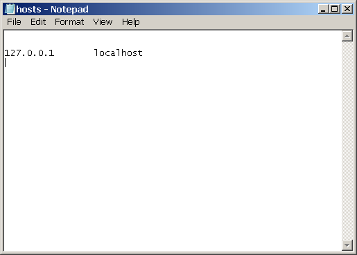
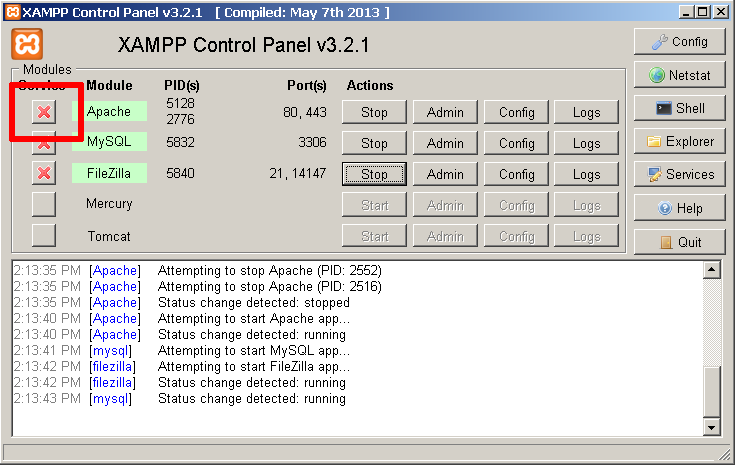

Troubleshoot Apache Startup Problems
Are you having difficulty getting your Apache server started? Here is a list of common problems and their solutions.
|
Note
|
The information in this document is based on this ApacheFriends community forum thread. |
Port 80 in use by PID 4
Your XAMPP control panel displays this message:
XX:XX:XX [Apache] Port 80 in use by "Unable to open process" with PID 4!
To solve this problem, follow these steps:
-
Right-click the XAMPP control panel icon and select "Run as administrator". Enter administrator credentials (if required) and click "OK" or "Yes" to proceed.
-
Open your Windows command prompt by clicking the "Shell" button in the XAMPP control panel.
-
At the command prompt, enter this command:
netsh http add iplisten ipaddress=::
-
Open the file C:\Windows\system32\drivers\etc\hosts and add the following line to it. Then, save the file.
127.0.0.1 localhost
This takes care of mapping the localhost domain name to the local machine, which always has the IP address 127.0.0.1.
|
Note
|
On some versions of Windows, you will not be able to edit the C:\Windows\system32\drivers\etc\hosts file without administrator privileges. You can edit the file by right-clicking the Notepad icon and selected the "Run as administrator" menu option, then entering administrator credentials (if required) and clicking "OK" or "Yes" to proceed. |
|
Tip
|
If the problem persists even after performing these steps, it could be due to a problem with Microsoft Internet Information Services (IIS), with Windows Work Folders or with third-party services. Refer to this page for alternative solutions. |
Ports 80 and 443 in use by Skype
Your XAMPP control panel displays these messages:
XX:XX:XX [Apache] Port 80 in use by "C:\Program Files (x86)\Skype\Phone\Skype.exe" with PID XXXX! XX:XX:XX [Apache] Port 443 in use by "C:\Program Files (x86)\Skype\Phone\Skype.exe" with PID XXXX!
To solve this problem, follow these steps:
-
Launch Skype.
-
Select the "Tools → Options → Advanced → Connection" menu item and in the resulting screen, disable the use of ports 80 and 443 for incoming Skype connections.

-
Click "Save". Restart Skype for your change to take effect.
Port 443 in use by VMWare
Your XAMPP control panel displays these messages:
XX:XX:XX [Apache] Port 443 in use by ""C:\Program Files (x86)\VMware\VMware Workstation\vmware-hostd.exe" -u "C:\ProgramData\VMware\hostd\config.xml"" with PID XXXX!
To solve this problem, follow these steps:
-
Launch VMWare Workstation.
-
Use the "Edit → Preferences → Shared VMs" menu and in the resulting dialog, enter a new port number for the VMWare Workstation Server.
-
Click "OK" to save your changes. Restart VMWare Workstation for your change to take effect.
ServerRoot Must Be a Valid Directory
Apache startup includes an error message like the one below:
httpd.exe: Syntax error on line XX of X:/xampp/apache/conf/httpd.conf: ServerRoot must be a valid directory
This is a common issue for XAMPP installations on portable devices. It occurs if the Apache configuration file points to a directory that no longer exists (for example, due to a drive letter change when a portable device is removed and reinserted). To solve this problem, follow these steps:
-
If the Apache service is registered (indicated by a green check mark next to its name in the XAMPP control panel), unregister it by clicking the check mark and answering "Yes" in the resulting dialog box.
 -
Edit the setup_xampp.bat file in your XAMPP installation directory (usually, C:\xampp). Within the file, find this line:
%PHP_BIN% -n -d output_buffering=0 %CONFIG_PHP%
-
Edit the line to include the special directive "usb" at the end, so that it looks like this.
%PHP_BIN% -n -d output_buffering=0 %CONFIG_PHP% usb
-
Save your changes. The, execute the file by double-clicking it in the Windows Explorer or executing it at the command prompt. This will fix any and all wrong base paths.